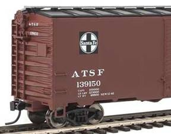

Conn
Summary
Conn Rail lets you determine where to deliver freight cars without index cards or printed switch lists. You set up a list of spots or delivery locations, a list of freight cars and associated spots, then specify where each car is currently located. Once this setup is done you can use the app to see where each car is and where it should be delivered.
Quick Start
- Use 'Spot List' to create a list of all "spots" on your layout. These are industries, yards, staging tracks, etc. - anyplace you can leave a car.
- Use 'Car List' to create a list of all freight cars to be used on your layout - initials, number and type (and optional notes). For each car you add a sequence of spots where the car will be delivered. You can edit each spot to add lading or instructions and set up how many days to leave a car somewhere - 0 to 7 days.
- Use 'Car Location' to set where each car is currently located - at a spot, in a train, or in offline storage.
- If you want to assume the role of train engineer/conductor, use 'Train Master' to create a train or view an existing train. Select Add/Pickup to insert cars into your train list as you travel across the layout. Select a car in the train list to view its details and then select Deliver or Setout when you drop off the car.
- If you want to assume the role of a local switcher or freight agent, use 'Yard Master'. You can select [All] to see every car on the layout that is not in a train (or in storage) or select a specific city/town to see just the local cars. Select a car in the list to view its details and then select Deliver or Setout when you move the car to a new spot.
- Select 'New Day' to increment the day/session number. Cars to be left for a number of days at a spot will be flagged as "hold" until the required number of days have passed.
Contents
Sample Layout
Here's a simple layout. It is basically a loop with two towns. At upper right are three staging/holding tracks that represent offline towns to the north, south, and west:
Spot List is used to build a list of every location where a car can be left for loading/unloading or to be picked up by someone else. Spots includes the following:
- Industries, freight houses, team tracks, etc.
- Interchange tracks, freight yards or other on-line holding tracks.
- Staging, fiddle or other off-line holding tracks.
If a stretch of the mainline is used to leave cars for another train to pick up then that would be listed too. However, if you just use that same stretch of mainline to temporarily hold cars while performing switching activities then it doesn't need to be listed.
Each spot requires a City/Town. For offline or staging locations this is usually enough. For online locations the industry would be added. This could be the industry name such as "U.S. Grain" or some other descriptor such as "Yard", "Team Track", "Interchange" or "Staging". If that industry uses more than one track the track name or number can also be included. This could be "1", "2" or "Inner", "Middle", "Outer", etc. Here's an example from our sample layout:
Here is the Spot List for our sample layout when finished:
Note that the Westport Junction (WJ) yard doesn't have each individual yard track listed. For this layout, "somewhere in the yard" is sufficient. Other layouts may require a car to be left on a specific yard track or may have a large yard where adding track information will make it easier to locate a car. In that case track information would be added.
Car List is used to build a list every freight car that will be used on the layout. The car initials, number and type are required. A notes field is provided for optional information such as price, date bought, etc.
Here's an example:

For the above car we would enter the following:
A drop down list contains the most common car types but you can also enter an alternate car type if necessary. Entering the proper type will help find the car when searching for it in a train or on the layout.
Now the car needs a sequence of spots/destinations. These create the life cycle of the car on the layout. The list will contain 2-4 entries. After the car is delivered to the last spot/destination in the list the cycle rotates back to the top.
Here's another example:
For the flatcar above we enter the car data:
We'll then add the first spot/destination for the car and we will see a list of all available spots:
We'll have the car cycle start off in Northville/Staging so we'll select that spot:
Note that the spot displays "0 days" on the right side. This refers to the number of days to hold the car at the destination. Typically when a car is delivered someplace for loading or unloading it isn't immediately ready to go to the next place. A tank car sent to a oil company for unloading might take a day to unload. An empty box car sent to a team track to be loaded with shoes might take 2-3 days to fill.
By default the value is set to 0 - meaning the car is ready to go to its next destination as soon as it is delivered to the current one. Generally this is fine for cars moved to staging, since they will typically either be placed in another train or storage by hand (such as in a fiddle yard). They might also immediately re-enter the layout in another train. Let's leave it at 0 for now.
Now let's add the next spot/destination. We'll have the car leave Northville/Staging and be delivered to Smith Steel in Westport Junction (WJ):
In this case we will edit the spot/destination information to reflect what is happening with the car. So we will select the list entry so we can edit it:
Let's assume the flatcar is empty and is being delivered to Smith Steel to be loaded. Let's also assume the loading process will take one day. So we'll edit the data to match:
We then select Done and see the value has changed on the main Car Add/Edit screen:
We could save the car information at this point. We have a valid car cycle - the car comes out of Northville staging empty, is dropped at Smith Steel for a day to be loaded and then is sent back to Northville staging - presumably to be emptied and have the cycle repeat again.
In this case
however, lets add another spot/destination (we can add
up to four). Let's say that after loading the car will be sent to one of the
team tracks in
We select Done and then Save and the car is ready for use. It will cycle from Northville/Staging (0 days), to WJ/Smith Steel (1 day), to Bedford/Team Track/Outer (1 day), to Northville, and repeat.
Each car in our Car List is then set up in the same way using the various spots from our Spot List. Even though each individual car repeats the same cycle, from an operator's view when working with multiple cars the patterns seem random.
Prior to an operating session, each car's actual location is set using Car Location. The car could be at a spot in a town, in a train on the layout, or in storage. Car Location can also be used during an operating session if a car is moved by hand - for example, into or out of storage in a fiddle yard setup.
Launching Car Location displays a list of all the cars and where they are - or an error if it has not been defined:
Note that any cars
currently in storage are displayed by default. Clearing the check box
"Show cars in storage" will hide these from the list.
A car can be located in one of three places: a spot in a
city/town, a train or in storage. If we select our example car - WM 2306 we see
three tabs representing each of these options:
City/Town
If the car is sitting by itself on the layout somewhere we would select that spot from the list. There is a dropdown list of towns that can be used to filter the list and only show the spots in that town. Selecting [All] displays a full list of all spots on the layout.
Train
If the car is coupled to a group of other cars in a train on the layout or in staging we would select the Train tab and then select which train - or create a new one. (See Train Master help on how to create or edit a train).
Storage
If we have more cars than the layout can comfortably hold we might have put the car on a shelf or in a box. In that case we would select the Storage tab and select the button marking the car as In Storage. Cars in storage do not appear in any Yard Master or Train Master lists.
Train Master
There are two ways to manage cars in an operating session - Train Master and Yard Master. Train Master allows us to manage an existing train or create a new one. The user assumes the role of an engineer or conductor who travels with the train from town to town delivering/setting out cars or picking up cars as needed.
As an example
we'll create a new train - we'll call it "NS 22". It is a local
freight that takes cars from Northville, heads south through Bedford and
Westport Junction (WJ) handling cars and then terminating in
First we'll create a new train in Train Master:
It shows up in our train list:
Meanwhile in Northville staging we've placed eight cars on the track with a locomotive and caboose that will become NS 22. We'll select our new train and then select Add/Pickup Available Car and add the eight cars to our train list. Note that this can also be done in Car Location by selecting each car, picking the Train tab and then selecting NS 22.
When we look at our train in Train Master we can see each car and its destination (marked with a right arrow):
It's a mix of cars
- some to be delivered directly to customers, some going through to
We'll start up and move the train south. The first town we
come to is
We find the first car - CNW 31306 (a boxcar) - in our train and select it from the list. This shows us the detailed information about the car and if there are any special instructions (in this case there are not):
So we perform the switching moves required to place the car in front of the freight house and when done we select Deliver. We are brought back to the list of cars and see that the car we just delivered is gone from the list.
We'll repeat the process for the other car in the list - WM 2306. When we look at the details we do see lading and some special instructions:
So we know the car
is carrying steel beams and that when we deliver it to the team track we should
leave it in front of the truck ramp for unloading. When done we again select
Deliver and our list of cars for
Before we leave town we will see if there are any cars we should pick up. Also, since we are a local freight we'll see if there are any cars that need to be moved within the town. We'll select Add/Pickup Available Car:
In the list we see
CNW 31306. This is the car we just dropped off so we'll leave it for now. Also,
its next destination is Northville and we are headed south so another reason to
leave it where it is. The next three cars NH 115023, NH 115047 and SHPX 6326
are all headed to our final destination -
Now we are ready to move to the next town...
The next town is
Westport Junction (WJ). This town has a local switcher so we don't have to
deliver cars directly - we can just leave them in the yard. Also, any cars
destined for
We'll select it and check out the details:
However, instead of selecting Deliver we will select Setout so we can leave the car in a temporary location. We then see a list of all spots/locations in the selected town:
We'll drop the car in the yard and select
"WJ/Yard" so that the local switcher can handle it. We can then
either select "[All]" or "
We'll repeat the same process for these three cars - drop them in the WJ yard and then selecting Setout for each, choosing WJ as the current city/town and then selecting WJ/Yard. When we choose WJ as the current city/town and then select Add/Pickup Available Car we see several cars - the ones we just dropped off and a couple of others - but none are headed in our direction so we are all set to leave town.
When we choose "[All]" we see that all the cars we
have left are destined for
So we'll continue on to
Note that only an empty train can be deleted. We can delete the train altogether, leave it alone for tomorrow or even rename it to the northbound counterpart - maybe "SN 23". Then we could select Add/Pickup Available Car and re-add the cars already in the train and even add a few more from storage. The whole process would then begin again.
As mentioned above, there are two ways to manage cars in an operating session - Train Master and Yard Master. Yard Master allows a user stationed in a town to manage the cars in that town. The user assumes the role of a yard switcher or freight agent.
As an example we'll take on the role of the Westport Junction (WJ) local switcher. Their job consists of several parts:
- Move cars between local industries.
- Deliver inbound cars left in the yard by passing trains.
- Pick up outbound cars and leave them in the yard for passing trains.
- Handle
cars to/from the
From the main menu we will launch Yard Master. We'll choose WJ as the current city/town and take a look at our workload for the day:
To keep things simple in this example we'll just start at the top and work down. Car CB&Q 191307 is a hopper car currently in the yard that needs to be delivered to the coal dump in town. We'll select it from the list.
This shows us the detailed information about the car and if there are any special instructions (in this case there are not):
So we'll move the car from the yard and drop it at the coal dump. When done we select Deliver. Upon return to the main list we see the car is still in the list. Since the car/spot was set up for 0 days the car is immediately ready to move to the next location (we'll assume it only takes a few minutes to empty the car):
Now the empty car is being sent to
After moving the car to the yard we select the car in the list. However, instead of selecting Deliver we will select Setout so we can leave the car in a temporary location. We then see a list of all spots/locations in town:
We'll select WJ/Yard and continue processing the list. The remainder of the work involves processing the rest of the cars in the list. Any other cars to be moved to/from local industries would be handled.
Looking at the list we see a mix of cars in the yard destined to locations north, south and west. In this case the switcher would make an effort to shuffle the cars around in the yard - possibly placing all the northbound cars on track 1, the southbound cars on track 2 and the westbound cars on track 3. This makes it easier for passing freights to pick them up.
Day Number / New Day Button
Towards the lower half of the main screen is information about the operating session number or "Day":
This is used by the Train Master and Yard Master to determine when a car is available to be moved. If a car has "Days to hold car" set to a value greater than 0 it will not be free to move until day number is incremented to greater than or equal to the day it was delivered plus the days to hold car.
For example, a car is delivered to a spot on day number 13 and the "Days to hold car" for that spot is set to 2. While day number remains 13 or is even increased to 14 by selecting New Day the car will show in Yard Master as "Hold car at current location" and it will not be available in Train Master for Add/Pickup. When day number is increased to 15 Yard Master will show the next destination for the car and Train Master will display the car in the list when Add/Pickup is selected.
Alerts
The main screen displays an Alert section. Generally it will display "No Alerts" but if there is a problem with the system an error alert will display. Selecting the error alert will take you to the appropriate screen to correct the problem.
As an example, we might see an alert similar to this:

This tells us that 7 cars in our Car List have not been assigned a current location. Selecting the alert will launch the Car Location screen allowing us to set each car's location.
From the application bar there is an option to select the user type:
By default, the user type is set to Single User. In this mode there is only one user for the system and the database information resides on their device. If multiple people are invited to operate the layout the system can also be set up where one user is the owner and other users access the data remotely via the WIFI network.
To setup the Owner/Remote User mode, first the owner/user selects the User Type menu item and selects the Owner option:
The user then selects OK to return to the main screen. The owner main screen will now display the owner role, the device's IP address and how many remote users are connected (presumably 0 at this point):
Next, each remote user selects the User Type menu item and selects the Remote User option. In the box for "Owner IP Address" the user would enter the IP address displayed on the owner's device:
The user then selects OK to return to the main screen. Within a few seconds the remote user should see that they are connected to the owner:
As each remote user is connected the owner should see the number of remote users connected increment accordingly.
Note that remote users have the same access to the system data as the owner. Remote users can add spots, set car location, use Train Master or Yard Master, etc. However only the owner has the ability to increment the day/session number. For all remote users the New Day button is disabled.
If, for some reason, connection is lost to the owner remote users will see the local copy of the data on their device but will no be able to make any updates until the connection is restored.
From the application bar there is an option to backup and restore the database:
The initial setup process can take some time to complete - depending on the size of the layout and the number of cars owned. Generally it is recommended that after setup the user should perform a backup of the database. This eliminates the frustration of having to re-enter all the data after a device problem or any other issue that may damage or destroy the application database.
To backup, select Backup Database. By default, a file named layout1.bak is created in the device's Documents folder. Once created, this file can be emailed, transferred to a computer via USB, or otherwise copied to a safe location.
To restore, transfer the file from your safe location to Documents or another know folder on the device. Then select Restore Database. The restore process will reset the system to the state it was in when the earlier backup was performed. Any changes made since the backup - spot add/delete, car edit, car location, etc. - will be lost. If acceptable, select OK on the warning message. Then browse to the file location and select the .bak file. A message will appear upon success.